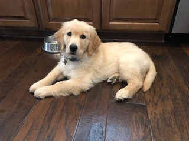

Hi, I'm Anna! I am happy you're here! I am currently a student at BYU, so I spend a lot of my time studying. However, once I finish with my studies, I love spending time with my family and friends. I also have many nephews and nieces, who bring so much joy into my life!! Here is a picture of me and my mom!

I love running outside. I feel so much gratitude for our earth when I am able to get outside and get to see some amazing views. I am also a big fan of watching sunsets. This is one my most cherished sights!
I also love animals. I have owned both dogs and cats, however, I think dogs have officially won me over. They are so sweet and fun to have around! This is one of my favorite dogs - Jackson!
